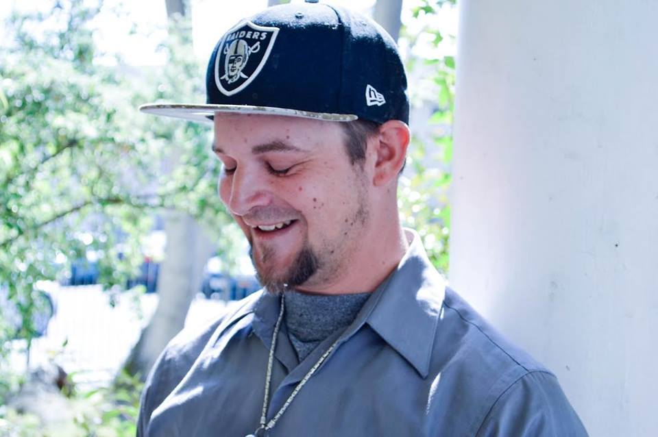
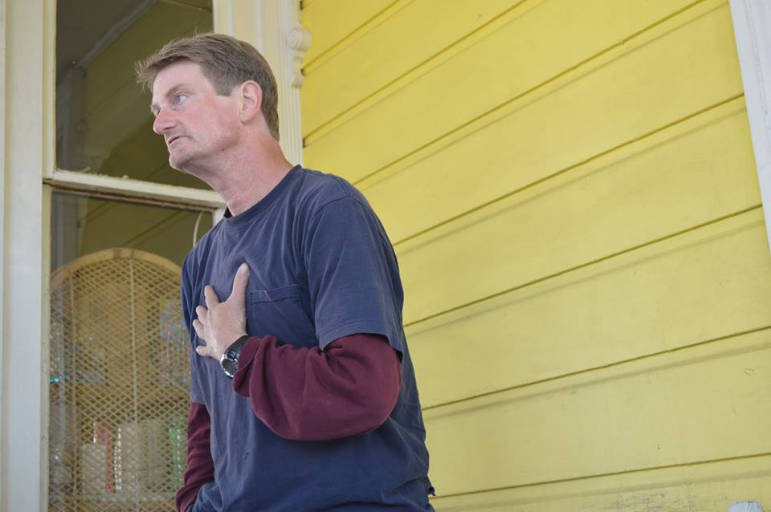

-
Next stop: All Saints' Episcopal Church, where we'll be sharing the stories of numerous members from Downtown Streets Team, an organization throughout the Bay Area dedicated toward eliminating homelessness and employing homeless individuals
-
“I’ve lost my license, lost my job, gone to jail. I’m working on getting all that cleaned up. I’ve got all my court stuff taken care of, no probation, no parole. A few fines still to pay off with the county, but we’re working on it one piece at a time. My son is actually helping me with that. It’s been really good this last year and a half, which is how long I’ve been here. It’s allowed me to reconnect with family, to share my experiences with my family and educate them about what happened. Nowadays, spending time with my family makes me happiest. My son lives here in San Jose and he works downtown so I get to see him often. We had several years apart when I was homeless but we’re working on our relationship, just taking it day by day, appreciating the small things and holding onto them.
I try not to be a nitpicker with him--he works at a bar, so he’s around alcohol all the time. I try not to say be careful all the time. He knows because he’s seen what has happened. I’ve lost people in each generation to alcohol or drugs, and he’s seen it--from grandparents to parents to even brothers and sisters of mine.” (4/4)
-
“My son is 25 years old, and he’s openly gay. He works downtown in a gay bar, and he’s very happy and joyful, looks just like me but shorter, poor child. His hair is actually thinner than mine, it’s funny. I get to tease him about that. He has lots of friends and I’m glad to see that. When I get into my own place, I’ll be able to have enough room for him to stay with me.” (3/4)
-
“Homelessness teaches you how to survive. You learn to have respect for other people’s boundaries and spaces by cleaning up after yourself and respecting those around you, being humble. But being homeless was scary. My first year I was homeless, I was attacked, and I was in the hospital for four days, and had lost my voice for about 2 weeks because they damaged my larynx. But it was an educational experience for me--I don’t trust people. I actually had a big fear of people until coming here. I didn’t want to be around anybody, which made my depression and drug alcohol abuse even worse because I was isolated from people. But coming here actually allowed me to open up, to work on talking to people, to get over fear. I still have a fear of people--I have a tendency to stutter a lot when I’m really nervous, but we’re working on it, and it’s gotten a lot better. It’s been an education, and it’s made me stronger. Even if I’m afraid of something, I’ll still try it--I’ll still put myself out there and try it anyways.” (2/4)
-
“My name is Franklin King-Pierce, and I am 46 years old. I was born on an Indian reservation in Northern California, but I was taken from the reservation when I was 5 and brought down here to a foster home. My mom found me here when I was 9 and I’ve been with her since then.
I was married for several years before it fell apart. My kid had already moved out, and I just gave up--my heart broke, pretty much. It started out with just drinking, and I still lived in a home for about 3 years, but in 2009 I became homeless and landed out here on the streets. My marriage fell apart because I flatlined. I wasn’t getting an education, I wasn’t growing in my job, I wasn’t growing in my community or in myself. It was all about the other person. When she walked out, I lost my identity. I’m working on that. It’s taken me since 2009 to become more independent and realize that I want to live.” (1/4)
-
"This [his right arm] I got for another friend that passed away. It’s basically a widowmaker, which is the name for when you’re in a fire and a branch comes down and hits you in the head. I got this [his left arm] too. It represents “veritas aequitas,” which is Latin for truth and justice. So together, they’re basically good and evil." (3/3)
-
“I’ve dealt with a lot of death and depression, which had a lot to do with my anger issues, causing me to blow up on people at the wrong times for the wrong reasons. During the first month of firefighting one of our guys drowned in the river, and we had to pull him out. It was a hard thing, and it set me in a lot of my drinking habits. It’s something I’ve tried to get away from, and I want to be stronger to be able to do that, by focusing on myself.” (2/3)
-

“My name is Christopher Walts, and around here they call me CW. I lived up north in Chico before I came down to San Jose. I was a firefighter for 5 years, a really good job, and I was doing okay for myself. But I was still drinking and getting involved in things I shouldn’t have been involved in. I ended up losing my job. I went to jail, I lost my place of residence, lost my truck. I was on the streets for almost 3 weeks until I ran out of money, and everything else that I needed to survive. But there are a lot of good memories. We used to sit around the firehouse waiting on a call, playing pool, gossiping, working on the engine and making sure everything was in line. We’d clean the hoses and check the water pressure in the truck. It was always a fun time, and we’d play pranks on each other. It was like a family. As part of the job I went to Hurricane Katrina back when I was 18, in 2005. It was a really humbling experience. People were giving us gumbo, and they would take us out on the swamp boats.” (1/3)
-
“People don't know that I’m a sports addict and I’m a weather freak. I love the violent weather, and I live in exactly the wrong place for it! In the near future I hope to move somewhere like New Mexico, where I can get close to the crazy weather.” (4/4)
-

"This is a transitional house, so when people leave here, they don’t usually come back. It’s a grounding place for those trying to get off the street, who are willing to make that change and move on. The mission house here, we cannot solve the homeless problem. But when we bring in the homeless off the street, hopefully they do make that change. When people come here they have a responsibility. They have chores in the house, and they go fundraising around the neighborhood, which is how they make connections." (3/4)
-
“I’m an introvert, and that’s another part of the problem. I never really had a lot of friends through college, and I became isolated when I had a bad motorcycle accident when I was in college--it took a year and a half away from my life, and all my friends were moving on, while I kind of got left behind. Every time I did get my life back together, alcohol would somehow find a way to get back in. I would drink a lot because I just wasn’t connected.” (2/4)
-

“My name is Matthew Bennett, and I was born and raised in Menlo Park. I’ve been homeless since 2001. For me, it wasn’t the economy–it was the alcohol and drugs that took me down, the alcohol more than anything. I grew up in a very good situation with an older brother and sister. My parents never argued, and I had a great upbringing–I never saw it coming, really. I never thought this would happen.
I’m surprised at how many people help with the homeless. There are a lot of churches that put meals on, and other organizations like that. Homelessness can become a way of life for people, especially here in the Bay Area where the weather’s really nice. With people serving meals all the time, and you being able to maybe fall asleep in the sleeping bag on the porch of the church, people just fall into it, and it’s hard for them to get out of it. The government doesn’t really help in getting people to stay out of homelessness.” (1/4)
-
First stop: United States Mission Transitional Housing of Downtown San Jose.
We'll be sharing the stories of Chris Walts (left), Franklin King-Pierce (middle), and Matthew Bennett (right).